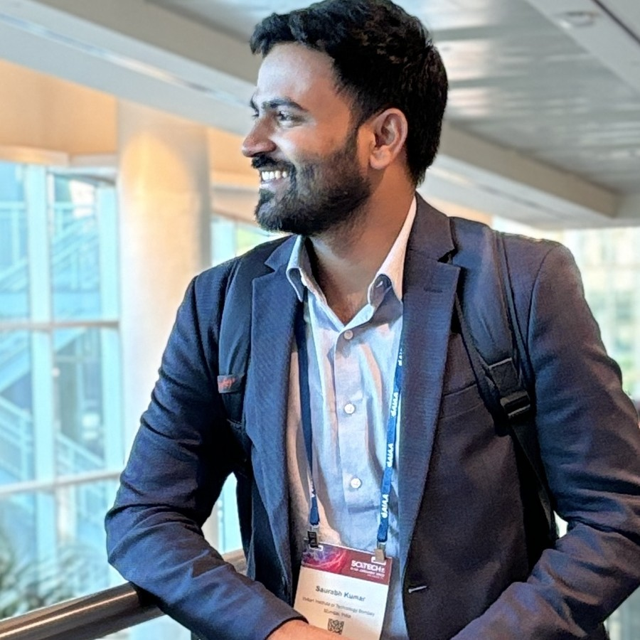

Dr. Saurabh Kumar



SKAbout
Saurabh Kumar received the B.Tech. in Electrical Engineering from the National Institute of Technology Patna, India, in 2019, the M.Tech. degree in Control Systems Engineering from the National Institute of Technology Kurukshetra, India, in 2021, and the Ph.D. degree in Aerospace Engineering from the Indian Institute of Technology Bombay, Mumbai, India, in 2024.
He is currently a Postdoctoral Fellow in the Department of Aerospace Engineering, IIT Bombay. His research interests include guidance and control of autonomous vehicles, nonlinear control, and cooperative pursuit-evasion.
Education
Thesis: Guidance and Control for Constrained Motion of Autonomous Vehicles
Thesis: Modelling and Control of Quanser 2 DoF Helicopter
News
[2026-05] Paper accepted at the 2026 Asian Control Conference (ASCC), Bali, Indonesia.
[2026-04] Paper accepted at the 2026 IEEE International Workshop on Variable Structure Systems (VSS), Exeter, UK.
[2026-03] Three papers accepted at the 2026 European Control Conference (ECC), Reykjavík, Iceland.
[2025-03-10] Successfully defended my Ph.D. at IIT Bombay